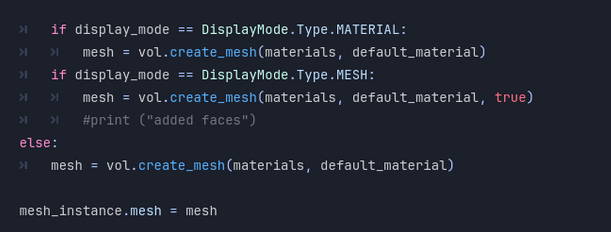

<!DOCTYPE html>
<html>
<head>
    <meta charset="utf-8" />
    <title></title>
</head>
<body>

</body>
</html>
<!DOCTYPE html>
<html lang="en">
<head>
    <meta charset="UTF-8">
    <meta name="viewport" content="width=device-width, initial-scale=1.0">
    <title>Lowell Batacan Portfolio</title>
    <link href="../style.css" rel="stylesheet" />
</head>
<body>
    <div class="container">
        <div class="banner">
            <h1>Lowell Batacan</h1>
            <h3>Programmer | Game Designer</h3>
        </div>
        <header>
            <nav>
                <a href="../index.html">Home</a>
                <a href="Projects.html">Projects</a>
                <a href="AboutMe.html">About Me</a>
                <a href="../LowellBatacan_GP_Resume.pdf" target="_blank">Resume</a>
            </nav>
        </header>


        <!--<section class="boxes">-->
        <div class="box white">
            <div class="box3">
                <h1>Tantalus</h1>
                <p>
                    <h2>Gameplay</h2>

                    <video width="854" height="480" controls="controls">

                        <source src="../TantalusImages/TantalusGameplay.mp4" type="video/mp4" />

                    </video>

                    <div class="FileLinks">
                        <h2>Download: <a href="../TantalusImages/Tantalus_Build 0.4.zip">Tantalus Playable Build</a></h2>
                        <h2>Project Files: <a href="https://github.com/AwesomeDudex5/HeckPooper-3D-Level">Github Repository</a> </h2>
                    </div>

                    <h2>Overview</h2>
                    A 3d platformer in collaboration with a group as an exercise in Level Design. The game was developed in Godot 4 and utilizes the 3d platform starter pack
                    from Kenney and Cyclops Level Editor tools.

                    <br />

                    A gargantuan tree bearing a single special fruit. The architecture in and around the tree is uninviting, dangerous, and isn’t hostile so much as apathetic
                    towards the player. Fallen rotten fruit litters the ground. The player is but one of many who’ve tried to claim the tree’s fruit, and more homely derelict camps can occasionally be
                    spotted around the more desolate architecture long a go built into the tree.

                    <h2>Goal</h2>
                    As the main programmer and the most familiar with Godot, my main priority in this project was to code and design the camera and movement,
                    as well as my section of the level. This is a group project with 2 other members. Everyone contributed to the overall level design, each with distinct
                    goals in mind for our respective sections.

                    <h2>Development</h2>
                    Tantalus was a collaborative project that challenged me to explore level design in Godot, an engine I was familiar with but hadn’t used extensively for 3D games.
                    The game’s premise—scaling a gargantuan tree to claim a single, elusive fruit—required a strong focus on environmental storytelling and precise platforming mechanics.
                    As the main programmer and the most experienced with Godot, my role was to establish the core systems, including movement, camera controls, and level design tools,
                    while collaborating with my team to create a cohesive and engaging experience.

                    <h3>Finding A Godot Level Builder</h3>
                    One of the first challenges we faced was finding the right tools to streamline our workflow.
                    The game was divided into three segments—the Canopy, the Trunk, and the Roots—with each team member responsible for designing one section.
                    To block out levels efficiently, we needed a reliable level editor.

                    <br /><br />

                    After some research, we settled on <a href="https://github.com/blackears/cyclopsLevelBuilder">Cyclops Level Builder</a>, a tool that allowed us to create primitive shapes
                    like cubes and cylinders quickly.
                    While it was great for blocking out levels, it had its limitations. The editing tools were somewhat janky, making it tricky to move and resize blocks precisely.
                    Also, the level editor was only able to exclusively make cubes and multi-sided polygons. While we could use the tools to create slopes and stairs,
                    we were limited in the types of terrain we could make.

                    <br /><br />

                    Despite the quirks, we were able to work around it and design the levels we created. We quickly picked up on how to use the editor with the available documentation and started
                    gray boxing and prototyping our level designs.

                    <h3>Implementing Core Systems</h3>
                    With the tools in place, I turned my attention to the core gameplay systems. We used a <a href="https://github.com/KenneyNL/Starter-Kit-3D-Platformer">Kenney 3D Platformer Starter Kit</a>
                    from Kenney as a starting point. While the template provided basic movement, jumping, and a checkpoint system, it needed significant adjustments to fit our vision.

                    <br /><br />

                    The template’s movement felt stiff and lacked the flexibility we needed for a platformer centered around climbing and precision jumps.
                    I modified the code to allow double jumping, adjusted variables like jump height and gravity, and fine-tuned the movement speed to make the controls feel responsive and fluid.

                    <br /><br />

                    To ensure the mechanics were balanced, I created a level gym, a test environment with platforms of varying heights and gaps. This allowed us to gauge the
                    player’s minimum and maximum jump distances, ensuring the levels could be designed with consistent metrics in mind.

                    <br /><br />
                    
                    <br /><br />

                    <h3>Implementing Mouse-Based Camera Control</h3>
                    The template’s camera system was designed with a controller in mind, using arrow keys to rotate and tilt the camera.
                    This felt unintuitive for keyboard and mouse players, so I rewrote the camera code to support mouse-based controls.

                    <br /><br />
                    To achieve this, the mouse-based camera movement in Tantalus was added to complement the existing joystick/arrow key controls,
                    providing players with a more intuitive way to control the camera. The script uses an enum (camera_mode) to toggle between Mouse and Joystick modes.
                    When in Mouse mode, the _unhandled_input function captures mouse movement and scroll wheel events. Horizontal and vertical mouse movements are converted into
                    rotation values, which are applied to the camera’s yaw and pitch, respectively. The scroll wheel adjusts the camera’s zoom level, ensuring smooth transitions between
                    close and distant views.

                    <br /><br />
                    
                    <br /><br />

                    To support both control schemes, the script checks the current camera_mode in _physics_process.
                    In Joystick mode, arrow keys or joystick inputs are processed to rotate the camera and adjust zoom. This dual-input system ensures players
                    can switch between mouse and joystick controls seamlessly, maintaining consistent camera behavior regardless of the input method.

                    <br /><br />
                    
                    <br /><br />

                    However, this introduced a new problem: the camera would often clip into walls, obscuring the player’s view. To address this,
                    I implemented a SpringArm pivot system, which allowed the camera to smoothly zoom in when it collided with obstacles. I added an
                    easing effect to make the transition feel natural rather than abrupt. This solution not only improved visibility but also enhanced the overall polish of the game.

                    <h3>Desigining the Levels</h3>
                    The heart of Tantalus lies in its environmental storytelling and level design. We wanted the levels to tell a story of perseverance and futility,
                    mirroring the myth of Tantalus, who was forever reaching for something just out of grasp. The game begins with the player emerging from a burrow,
                    greeted by the sight of the immortality fruit hanging high in the tree. Throughout the levels, derelict campsites serve as checkpoints, hinting
                    at the many adventurers who attempted—and failed—to claim the fruit.

                    <br /><br />

                    In the Canopy section, which I was in charge of and designed, the player enters unexplored territory. Here, they must place their own campsites,
                    symbolizing their role as a trailblazer. This section was designed to test the player’s precision and spatial awareness, with narrow platforms and treacherous
                    gaps that punished mistakes harshly. The section challenged the player's precision in platforming as branches are thin and spaced apart enough to give the
                    player a sense of dread when traversing. The level is constructed in a way that if a player misses their jump, they will fall back to the previous section.

                    <br /><br />
                    
                    <br />

                    <h3>Playtesting and Iteration</h3>
                    During playtesting, we noticed a significant difficulty spike between the second and third sections. The Trunk section,
                    set inside buildings, focused on spatial puzzles and exploration, while the Canopy section demanded precise platforming skills.
                    To address this, we added more visual cues, such as coins, to guide players through the more challenging sections.

                    <br /><br />
                    We also adjusted the placement of checkpoints to ensure the game felt fair. In the earlier sections, checkpoints were pre-placed at campsites,
                    but in the Canopy, players had to strategically place their own, adding to the narrative of exploring new territory not yet traversed.

                    <br /><br />

                    Playtesting revealed several issues that needed addressing. One major problem was the lack of shading and textures,
                    which made it difficult for players to gauge depth and distance. To fix this, I modified the code to allow us to assign color materials to blocks,
                    replacing the default checkered pattern with more visually distinct textures.

                    <br /><br />

                    To do this, I went into the code of the level editor and into the part where the primitive object was initialized.
                    It was assigned a checkered pattern on the it’s UVs. I created a public material variable so the other designers can make their own textures.
                    Upon changing the material, the new variable is then assigned to the normals of the polygon.

                    <br /><br />
                    
                    <br />
                    

                </p>
            </div>

        </div>
        <!--</section>-->

        <footer>
            <p>
                <hr />
                <h1>Contact Information</h1>
                <h2>
                    <a href="mailto:lowell.batacan@yahoo.com">lowell.batacan@yahoo.com</a> |
                    <a href="https://www.linkedin.com/in/lowell-batacan/">LinkedIn</a> |
                    <a href="https://teitoku-lowliet.itch.io/">Itch.io</a> |
                    <a href="https://github.com/AwesomeDudex5">GitHub</a>
                </h2>

            </p>
        </footer>
    </div>
</body>
</html>